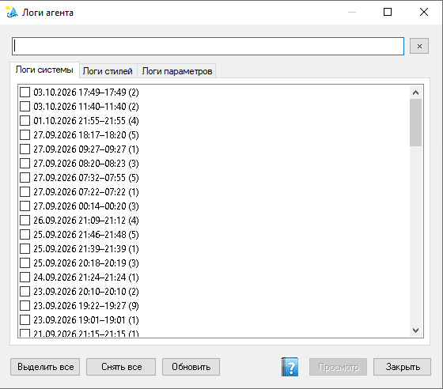

Логи агента
Просмотр сохранённых логов работы агента ISIDA: системного журнала, журнала стилей поведения и журнала параметров гомеостаза. Данные читаются из CSV-файлов и выводятся HTML-отчётом.
Как открыть
На панели «Агент» над областью «Ответ агента» справа есть кнопка Логи. Она открывает окно с тремя вкладками.

Окно «Логи агента»: вкладки Логи системы, Логи стилей, Логи параметров, список сессий с галочками и кнопки Выделить все, Снять все, Обновить, Очистить, Каталог, Просмотр, Закрыть.
Вкладки
| Вкладка | Содержимое |
|---|---|
| Логи системы | Системный журнал агента: пульс, состояние, стили, тема, триггер, среда, ОР/УМ, опасность, актуальность, рефлексы, автоматизмы, цепочки, циклы мышления. |
| Логи стилей | Итоговые стили поведения по пульсам и активации стилей от параметров гомеостаза (зоны активации). |
| Логи параметров | Параметры гомеостаза: значение, норма, вес, скорость, функция срочности, состояние и зона активации. |
Работа с сессиями
Над вкладками есть поле фильтра: набранный текст отбирает сессии активной вкладки по вхождению в подпись (дата/время/число записей). Кнопка × справа очищает фильтр. Фильтр применяется к каждой вкладке независимо; уже проставленные отметки сохраняются.
На каждой вкладке — список сессий (непрерывных отрезков лога). Сессия подписана датой, временем начала и окончания и числом записей, например 03.10.2026 14:05–14:37 (1920).
- Отметьте одну или несколько сессий галочками (двойной щелчок по строке тоже переключает отметку).
- Выделить все / Снять все — массовые операции над видимыми (отфильтрованными) сессиями активной вкладки.
- Обновить — перечитать список сессий из файлов логов.
- Каталог — открыть папку логов
%ProgramData%\VELUM\Logs. - Просмотр — сформировать HTML-отчёт по выделенным сессиям.
- Очистить — удалить выделенные сессии активной вкладки и связанные с ними отчёты (см. ниже).
Очистка записей
Кнопка Очистить удаляет выделенные (отмеченные галочками) сессии активной вкладки. Для каждой сессии:
- из соответствующего файла лога удаляются её строки — остальные сессии файла сохраняются;
- удаляется связанный HTML-отчёт в подпапке
Reports, если он есть.
Отчёт считается связанным с сессией, если его имя совпадает с именем сессии в списке: {префикс вкладки}_{yyyyMMdd_HHmmss}.html, где штамп — время начала сессии. Префикс различает вкладки (Логи_системы, Логи_стилей, Логи_параметров), поэтому отчёты разных вкладок с одинаковым временем не путаются. Отчёты, сформированные ранее по времени нажатия кнопки «Просмотр» (до этого обновления), автоматически не находятся и остаются в папке Reports.
Отчёт
Отчёт сохраняется в подпапку Reports каталога логов под именем, привязанным к выделенным сессиям: {префикс вкладки}_{yyyyMMdd_HHmmss}.html (штамп — время начала самой ранней выделенной сессии). После сохранения предлагается открыть отчёт в браузере. Отчёт оформлен в обычном стиле; у каждой ячейки и заголовка есть всплывающая подсказка (атрибут title): наведите курсор на ячейку, чтобы увидеть расшифровку — например, названия стилей, действия рефлекса, фразы триггера, давление метрик среды.
AgentLogs.csv, AgentLogs_Styles.csv, AgentLogs_Parameters.csv.